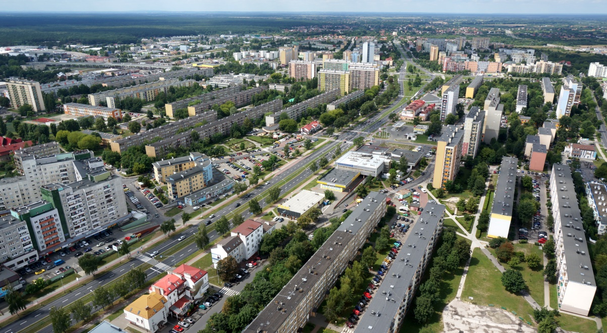
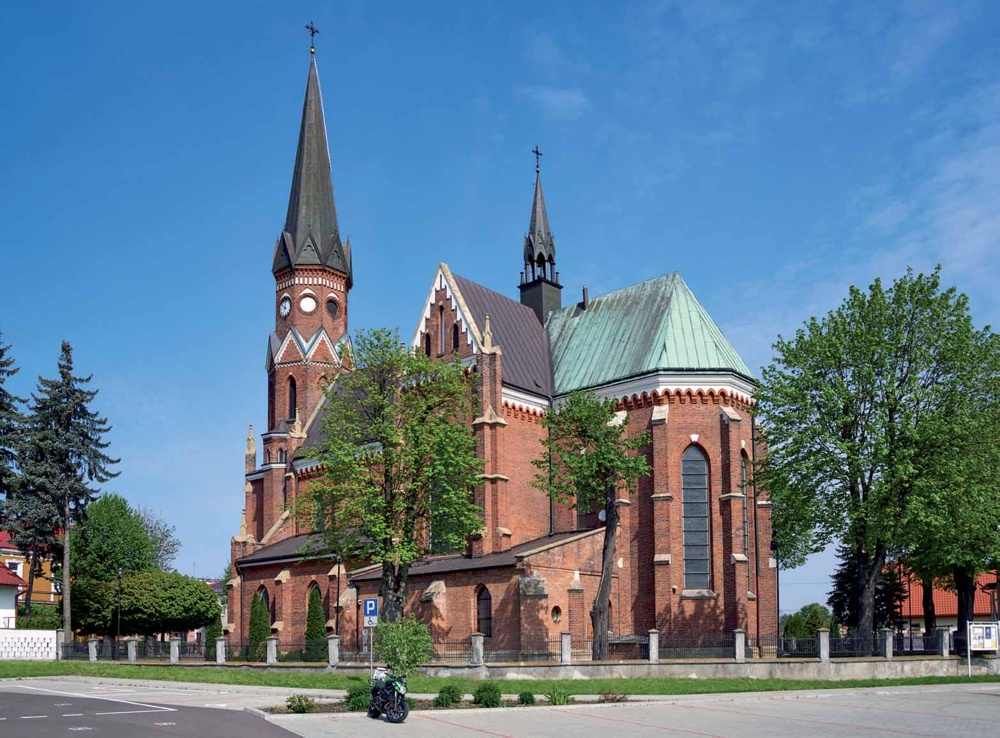

Stalowa Wola
Stalowa Wola – miasto w województwie podkarpackim, w powiecie stalowowolskim, położone w Kotlinie Sandomierskiej. Przez miasto przepływa rzeka San.
W latach 1945–1975 miasto administracyjnie należało do województwa rzeszowskiego, a w latach 1975–1998 do województwa tarnobrzeskiego.
Według danych GUS z 31 grudnia 2020 roku miasto liczyło 59 623 mieszkańców.


źrodło:
Wikipedia